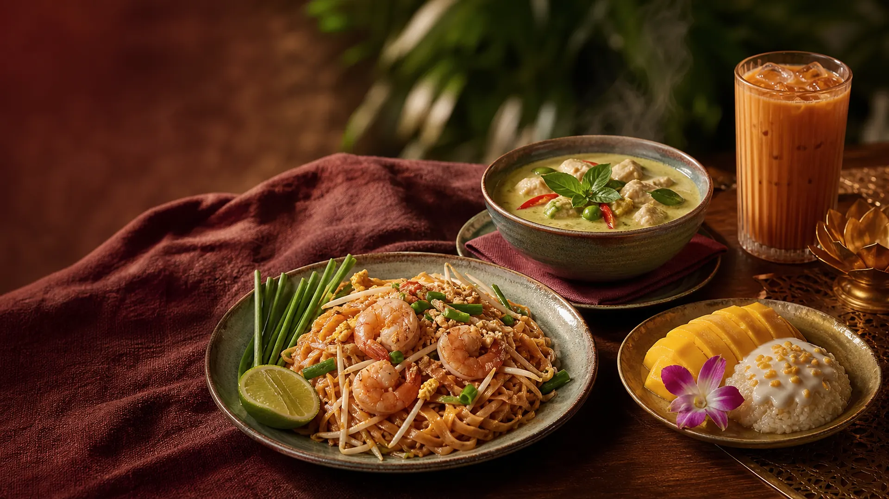
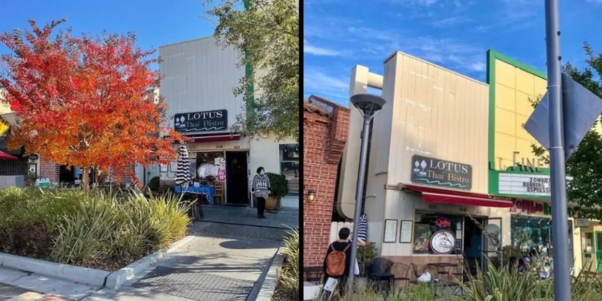
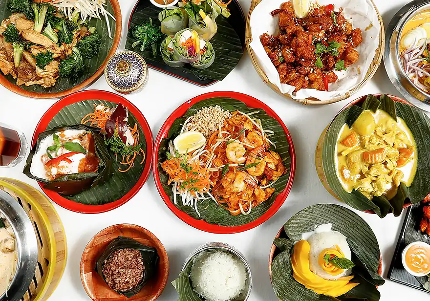
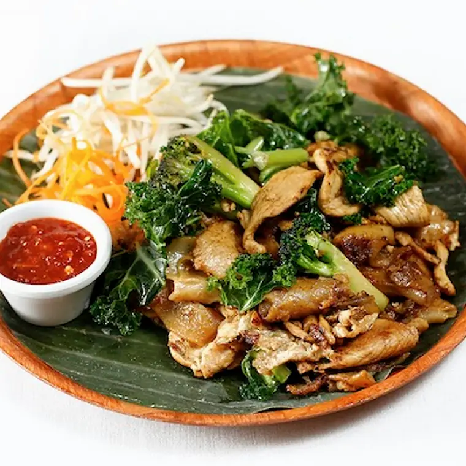

Pad Thai
Stir-fried thin rice noodles

Palo Alto · Family owned
Bright Thai flavors, generous family cooking and a table made for sharing.

425 California AvenueWelcome to the neighborhood
Family owned and operated, Lotus brings indoor dining, outdoor tables, takeout and catering to the California Avenue business district.
Color on every plate
From wok-fired noodles to coconut curries, every choice brings its own rhythm.

